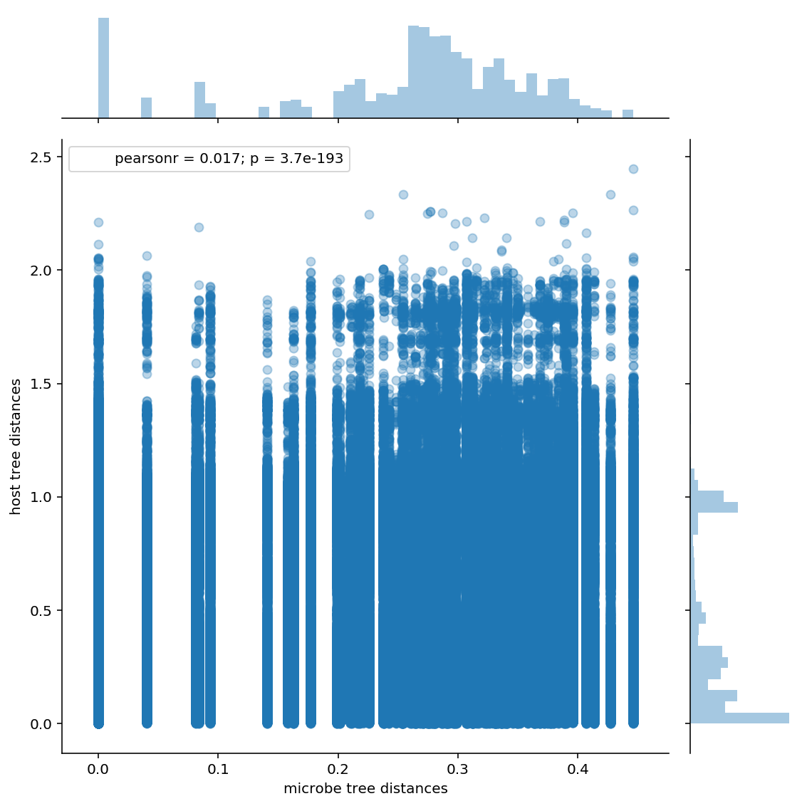

SuchLinkedTree_examples
SuchLinkedTrees
In the last article, we saw how to use SuchTree to probe the topology of
very large trees. In this article, we're going to look at the other component
of the package, SuchLinkedTrees.
If you are interested in studying how two groups of organisms interact (or, rather, have interacted over evolutionary time), you will find yourself with two trees of distinct groups of taxa that are linked by a matrix of interaction observations. This is sometimes called a 'dueling trees' problem.

If the trees happen to have the same number of taxa, and the interaction matrix happens to be a unit matrix, then you can compute the distance matrix for each of your trees and use the Mantel test to compare them. However, this is a pretty special case. Hommola et al. describe a method extends the Mantel test in this paper here :
- A Permutation Test of Host–Parasite Cospeciation. Molecular Biology and Evolution, Vol. 26, No. 7. (01 July 2009), pp. 1457-1468, by Kerstin Hommola, Judith E. Smith, Yang Qiu, Walter R. Gilks
This is implemented in scikit-bio as hommola_cospeciation.
Unfortunately, the version in scikit-bio does not scale to very large trees,
and does not expose the computed distances for analysis. This is where
SuchLinkedTrees can help.
%pylab inline
%config InlineBackend.figure_format='retina'
from SuchTree import SuchTree, SuchLinkedTrees
import seaborn
import pandas
from scipy.cluster.hierarchy import ClusterWarning
from scipy.stats import pearsonr
warnings.simplefilter( 'ignore', UserWarning )
Populating the interactive namespace from numpy and matplotlib
To get started, we need to initialize two trees and a table of observations linking the taxa on the two trees.
T1 = SuchTree( 'data/bigtrees/host.tree' )
T2 = SuchTree( 'data/bigtrees/guest.tree')
LK = pandas.read_csv( 'data/bigtrees/links.csv', index_col=0 )
print( 'host tree taxa : %d' % T1.n_leafs )
print( 'guest tree taxa : %d' % T2.n_leafs )
print( 'observation matrix : %d x %d' % LK.shape )
host tree taxa : 14
guest tree taxa : 103446
observation matrix : 14 x 103446
To create a SuchLinkedTrees instance, you need two SuchTrees and a pandas
DataFrame, where the taxa in the first tree matches the DataFrame index, and the
taxa in the second tree matches the DataFrame columns.
This is a pretty large dataset, so it takes a bit of time to load.
%time SLT = SuchLinkedTrees( T1, T2, LK )
CPU times: user 8min, sys: 340 ms, total: 8min 1s
Wall time: 8min 4s
n_links = sum(LK.apply(sum))
print( 'total observations : %d' % n_links )
print( 'observation pairs : %d' % int( ( n_links * ( n_links - 1 ) ) / 2 ) )
total observations : 44904
observation pairs : 1008162156
To test for cospeciation, Hommola's method does the following :
- calculate the patristic distance between the host taxa from the two observations
- calculate the patristic distance between the guest taxa from the two observations
- calculate the Pearson's correlation of the distance measures
Then, to calculate the significance of the correlation, it randomly permutes the observation table and recalculates the distances and correlations. A significance measure (a $p$ value) is estimated based on how likely the correlation measure on unpermuted observations could belong to the set of correlation measures on permuted observations.
For each correlation measure, we'd have to do calculate 1,008,162,156 patristic distances through each of the two trees. To calculate the significance, we would then need to permute the observations and then repeat the process about 50 times. That's 100,816,215,600 tree traversals!
How long would that take? In our previous example, we benchmarked 1,000,000 distance calculations at about 14 seconds on a single thread. For this dataset, one correlation measure would require about a thousand times as many lookups, so it should have a run time of about four hours. With the significance test, that would be a little more than one CPU-week. I suppose that's not impossible, but for large datasets like this, we probably don't need an exhaustive search of every possible pair of observations to get a fairly accurate correlation measure.
So, we'ere going to use SuchLinkedTrees.sample_linked_distances(),
which returns a representative sample of distances. It does this
by filling a user-specified number of buckets (default : 64) with distances
between randomly chosen observations. It stops when the standard deviation of
the standard deviation of the buckets falls bellow sigma (default : 0.001).
%time result = SLT.sample_linked_distances( sigma=0.001, buckets=64, n=4096 )
CPU times: user 39.5 s, sys: 40 ms, total: 39.6 s
Wall time: 39.8 s
result
{'TreeA': array([0.264332 , 0.21065001, 0.264911 , ..., 0.34968701, 0.265522 ,
0.264911 ]),
'TreeB': array([0.02564294, 0.31347001, 0.98371613, ..., 0.28150666, 0.17121513,
0.20058692]),
'n_pairs': 1008162156,
'n_samples': 3145728,
'deviation_a': 0.00039790052687749267,
'deviation_b': 0.0009455526014789939}
print( 'sampled link pairs : %d' % len(result['TreeA']) )
print( 'Pearson\'s correlation : r=%f, p=%f' % pearsonr( result['TreeA'],
result['TreeB'] ) )
sampled link pairs : 3145728
Pearson's correlation : r=0.016714, p=0.000000
Not too bad. The algorithm went through ten iterations, placing ten blocks of 4096 pairs into each bucket before it converged on our stopping condition after testing 2,621,440 pairs (about 0.2% of the possible pairs). Note that the $p$-value we see here is not Hommola's $p$-value -- it doesn't include any information about the topologies of the trees.
Let's see what the distribution of sampled distances looks like.
df = pandas.DataFrame( { 'microbe tree distances' : result['TreeA'],
'host tree distances' : result['TreeB'] } )
seaborn.jointplot( 'microbe tree distances', 'host tree distances',
data=df, alpha=0.3, size=8 )
<seaborn.axisgrid.JointGrid at 0x7f07801c86d8>

Well... that's... something? In this case, we are looking at the entire microbiome of a complex of 14 host species that's about 10-20 million years old. Because bacteria and archaea are older than that, we don't expect to see a meaningful pattern of coevolution at the scale of the whole microbial community.
If we're looking for coevolution, we want to examine clades within the microbial
community. This is what SuchLinkedTrees really designed to do.
SuchLinkedTrees has two functions that allow you to examine individual clades.
subset_a() takes the node id of an internal node of the first tree (usually, the
host organisms), and masks the data within the SuchLinkedTrees instance so that
that node behaves as the root. subset_b() does the same for the second tree
(usually, the guest organisms).
SLT.subset_b_size
103446
The observations are also masked so that distance calculations are constrained to within that clade. The masking operation is extremely efficient, even for very large datasets.
SLT.subset_b(121)
SLT.subset_b_leafs
array([122, 124, 6, 4, 0, 2, 18, 118, 120, 8, 14, 16, 10,
12, 32, 34, 116, 26, 28, 30, 36, 86, 102, 104, 110, 112,
114, 24, 38, 40, 84, 88, 90, 92, 94, 100, 106, 108, 20,
22, 42, 44, 78, 96, 98, 76, 80, 82, 52, 70, 46, 72,
74, 48, 50, 54, 56, 58, 60, 62, 64, 66, 68])
So, all we need to do is iterate over the internal nodes of the microbe tree
(which we can get from SuchTree's get_internal_nodes() function), subset
the guest tree to that node, and apply Hommola's algorithm to the masked
SuchLinkedTrees instance.
I'm going to put some simple constrains based on clade size. You could also use the average or total tree depth for each clade. It takes about an hour to finish all 103,445 clades, so let's look at a random sample of 10,000 of them.
from pyprind import ProgBar
warnings.simplefilter( 'ignore', RuntimeWarning )
N = len( T2.get_internal_nodes() )
progbar = ProgBar( N, title='Chugging through microbime data...' )
data = []
for n,nodeid in enumerate( T2.get_internal_nodes() ) :
SLT.subset_b( nodeid )
progbar.update()
if SLT.subset_b_size < 10 :
continue
if SLT.subset_n_links > 2500 :
continue
d = {}
d['name'] = 'clade_' + str(nodeid)
d['n_links'] = SLT.subset_n_links
d['n_leafs'] = SLT.subset_b_size
ld = SLT.linked_distances()
d['r'], d['p'] = pearsonr( ld['TreeA'], ld['TreeB'] )
data.append( d )
data = pandas.DataFrame( data ).dropna()
Chugging through microbime data...
0% [##############################] 100% | ETA: 00:00:00
Total time elapsed: 00:59:38
Let's see what we've got!
data.head()
| n_leafs | n_links | name | p | r | |
|---|---|---|---|---|---|
| 0 | 105 | 46 | clade_125 | 2.459121e-04 | -0.113734 |
| 1 | 319 | 123 | clade_159421 | 1.014772e-03 | -0.037933 |
| 2 | 63 | 18 | clade_121 | 8.836506e-02 | -0.138239 |
| 3 | 42 | 28 | clade_127 | 1.432212e-02 | -0.125883 |
| 4 | 242 | 87 | clade_158329 | 1.748205e-07 | -0.085288 |
seaborn.jointplot( data.n_leafs, data.r, alpha=0.3, size=8 )
<seaborn.axisgrid.JointGrid at 0x7f07803ff128>

Are there any clades that are big enough to to be interesting that show a significant correlation above 0.6?
data.loc[ ( data.r > 0.6 ) &
( data.n_leafs > 10 ) &
( data.n_links > 15 ) &
( data.p < 0.01 ) ]
| n_leafs | n_links | name | p | r | |
|---|---|---|---|---|---|
| 14799 | 108 | 22 | clade_26971 | 5.982235e-33 | 0.681951 |
| 14999 | 103 | 22 | clade_27163 | 5.982235e-33 | 0.681951 |
| 15196 | 96 | 20 | clade_27145 | 3.844922e-27 | 0.680072 |
| 15395 | 87 | 17 | clade_27061 | 1.621913e-19 | 0.676366 |
Cool. Let's go back and look at these in more detail.
SLT.subset_b( 26971 )
ld = SLT.linked_distances()
seaborn.jointplot( ld['TreeA'], ld['TreeB'] )
<seaborn.axisgrid.JointGrid at 0x7f0780928160>
Huh. Well, that looks a lot less interesting than I hoped. This is the problem with correlation measures -- they don't test that the data obeys their assumptions. In this case, we're using Pierson's $r$, which assumes that the data from the two sources is normally distributed, which this clearly is not. If you haven't seen this before, check out Anscombe's quartet; the gist of his argument is that it's not a good idea to apply any statistic without examining the data graphically.
Let's have a look at the trees so we can get a better idea of why this is
broken. Unfortunately, I don't have a great way of pulling out the subtree
for plotting yet, so this will require some help from dendropy.
from dendropy import Tree
from tempfile import NamedTemporaryFile
tmpfile1 = NamedTemporaryFile()
tmpfile2 = NamedTemporaryFile()
# invert the taxa : node_id map
# FIXME : I need a better interface for this, suggestions welcome
sfeal = dict( zip( SLT.TreeB.leafs.values(), SLT.TreeB.leafs.keys() ) )
subset_taxa = [ sfeal[i] for i in SLT.subset_b_leafs ]
guest_tree = Tree.get_from_path( 'data/bigtrees/guest.tree',
schema='newick',
preserve_underscores=True ) # Newick is the worst
subset_tree = guest_tree.extract_tree_with_taxa_labels( subset_taxa )
subset_tree.write_to_path( tmpfile1.name, schema='newick' )
LK[ subset_taxa ].to_csv( tmpfile2.name )
%load_ext rpy2.ipython
cladepath = tmpfile1.name
linkpath = tmpfile2.name
outpath = 'clade_26971.svg'
%%R -i cladepath -i linkpath -i outpath -w 800 -h 800 -u px
library("phytools")
library("igraph")
tr1 <- read.tree( "data/bigtrees/host.tree" )
tr2 <- read.tree( cladepath )
links <- read.csv( linkpath, row.names=1, stringsAsFactors = F )
im <- graph_from_incidence_matrix( as.matrix( links ) )
assoc <- as_edgelist( im )
obj <- cophylo( tr1, tr2, assoc=assoc )
svg( outpath, width = 10, height = 12 )
plot( obj )
Rotating nodes to optimize matching...
Done.
Now that we've gotten through the plotting hampsterdance, we can have a look at the structure of this clade and its relationship with the host organisms :
If we're hoping to find an example of coevolution, this is an excellent example of what we are not looking for! The Hommola test is not really appropriate for this application. The Hommola test is really intended for cases where you have something that looks like it might be an example of coevolution, and you would like to measure how strong the effect is. We are abusing it somewhat by asking it to distinguish coevolution from a background of other kinds of interactions, to say nothing of ignoring multiple testing effects.
So, we'll need a more sophisticated way to test for coevolution. With SuchTree and
SuchLinkedTrees handling the grunt work, we can focus on the those models.